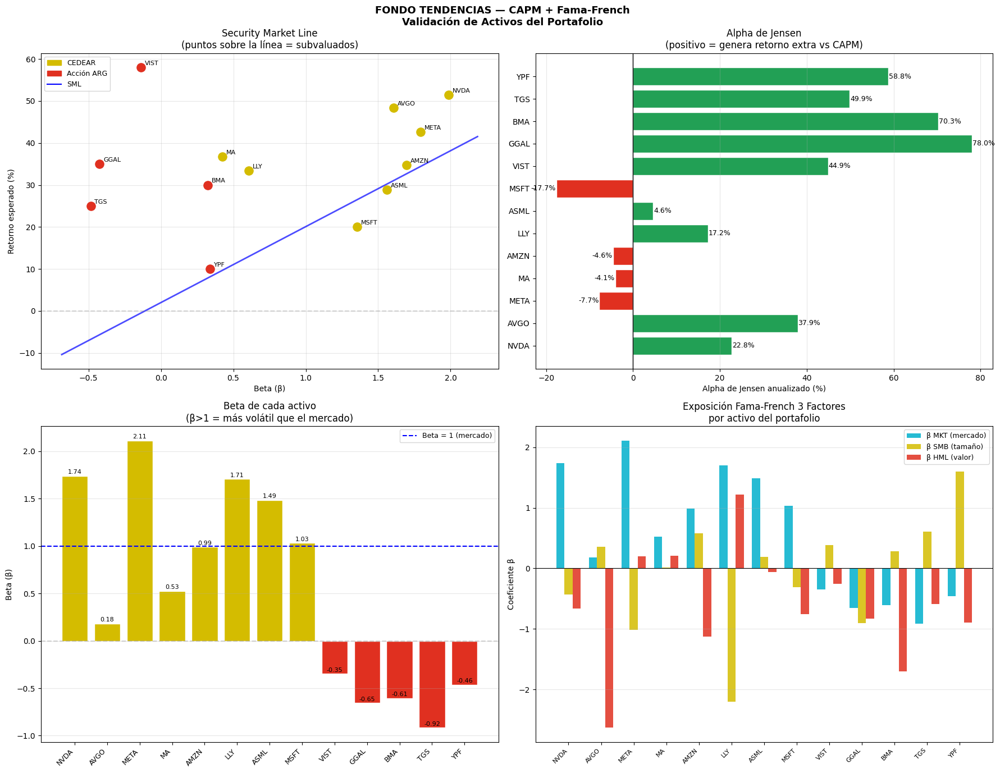
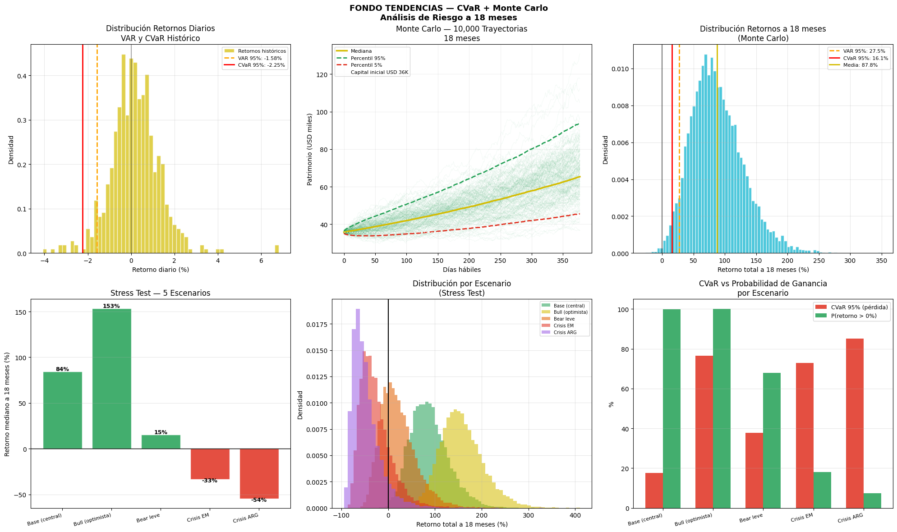

Matemática Financiera · FCI Real · Modelos Cuantitativos sobre Mercados Argentinos · 2026
Patrimonio
$50M
ARS · 50.000 cuotapartes
Retorno esperado
28.23%
Anual en USD
Sharpe Ratio
1.78
Muy bueno (>1.5)
Volatilidad
14.74%
Anual estimada
CVaR mensual 95%
-10.56%
Pérdida máx. esperada
P(ganar 18m)
99.5%
Monte Carlo · 10.000 sim.
Composición del fondoClick en cada sector para ver detalle del activo
DISTRIBUCIÓN DEL PORTAFOLIO
$50,000 USD · 13 activos · clickeá un sector
←
Hacé click en un sector para ver toda la info
Rendimiento comparativo proyectadoJun 2026 → Jun 2027 · en pesos argentinos (ARS) · pasá el mouse por el gráfico para comparar
Fondo Tendencias (USD→ARS)
Plazo fijo
Inflación (IPC)
Dólar (BNA)
FONDO TENDENCIAS
+53.8%
anual proyectado ARS
PLAZO FIJO
+22.1%
REM
INFLACIÓN IPC
+25.5%
consenso REM/BCRA
DÓLAR BNA
+19.9%
variación proyectada
Fondo de inversión: rendimiento 28,23% anual en USD, convertido a ARS (1,2823 × 1,199) − 1 |
Plazo fijo: BCRA TNA promedio mensual capitalizada a 30 días |
Inflación: INDEC IPC, dato may 2026 estimado según consenso REM/BCRA |
Dólar: Banco Nación Argentina / dolarito.ar, variación proyectada anual ·
Período proyectado: 01/06/2026 – 01/06/2027
Pesos absolutos en el fondoResultado Black-Litterman + Markowitz
Activo
Tipo
% Fondo
USD asignado
ARS asignado
Retorno BL
Banco research
Señal CAPM
GD35/AL30
Soberano USD
13.00%
$4,643
$6,500,000
12.0%
Mariva · SBS
—
DLR102026
Dólar Futuro
2.00%
$714
$1,000,000
FX cover
ROFEX · BYMA
✅ Cobertura
MA
CEDEAR
10.60%
$3,787
$5,302,000
14.9%
Santander PB
✅ +27.14%
VIST
Acción ARG
10.00%
$3,571
$5,000,000
47.1%
JPM · SBS · IEB
✅ +58.47%
YPF ON/TGS ON
ON Corp
10.00%
$3,571
$5,000,000
10.0%
Grupo SBS · IEB
—
YPF
Acción ARG
9.65%
$3,446
$4,825,000
45.3%
Grupo SBS
➡ Neutro
CER (TZXO6/TZXD6)
CER
7.00%
$2,500
$3,500,000
35.0%
Balanz · Bull Cap.
—
NVDA
CEDEAR
6.86%
$2,449
$3,428,000
47.4%
Santander PB
✅ +13.48%
AMZN
CEDEAR
5.09%
$1,816
$2,543,000
28.0%
Santander PB
➡ Neutro
SFD34
Prov. USD
5.00%
$1,786
$2,500,000
15.0%
Facimex
—
GGAL
Acción ARG
4.21%
$1,505
$2,107,000
51.2%
JPM · Grupo SBS
✅ +40.65%
META
CEDEAR
3.92%
$1,398
$1,958,000
32.6%
Santander PB
✅ +8.19%
LLY
CEDEAR
3.44%
$1,227
$1,718,000
16.9%
Santander PB
✅ +20.42%
Caución
Liquidez
3.00%
$1,071
$1,500,000
20.0%
CNV mínimo
—
AVGO
CEDEAR
2.99%
$1,067
$1,494,000
42.9%
Santander PB
✅ +17.33%
MSFT
CEDEAR
2.00%
$715
$1,001,000
19.5%
PULSO · Barron's
➡ Neutro
BMA
Acción ARG
1.08%
$387
$542,000
51.2%
JPMorgan
✅ +22.12%
01 · BLACK-LITTERMAN
Combina lo que dice el mercado (retornos de equilibrio implícitos en los market caps) con las visiones del research institucional PULSO. Resuelve el principal problema de Markowitz puro: la sensibilidad extrema a los retornos esperados.
E[R] = [(τΣ)⁻¹ + P'Ω⁻¹P]⁻¹ × [(τΣ)⁻¹π + P'Ω⁻¹Q]
Donde π = retornos de equilibrio · Q = visiones PULSO · Ω = incertidumbre de visiones · τ = 0.05
✓ Output: retornos ajustados BL por activo — NVDA 47.4% · VIST 47.1% · GGAL 51.2% · MA 14.9%
Con los retornos de Black-Litterman, maximiza el Sharpe Ratio sujeto a restricciones CNV (máximo 15% por activo). Encuentra la combinación óptima de activos en la frontera eficiente.
CAPM valida si cada activo elegido por Markowitz está sobre la Security Market Line — es decir, si el retorno esperado supera lo que justifica su riesgo sistemático (beta). Fama-French agrega los factores de tamaño (SMB) y valor (HML).
✓ 10/13 activos subvaluados o neutros · Hallazgo clave: acciones ARG tienen beta negativo — diversificación genuina vs S&P500
CAPM — Security Market Line · señal por activo
Activo
Beta (β)
CAPM exige
PULSO espera
Alpha (α)
Señal
NVDA
1.986
37.92%
51.40%
+13.48%
✅ SUBVALUADO
AVGO
1.608
31.07%
48.40%
+17.33%
✅ SUBVALUADO
META
1.792
34.41%
42.60%
+8.19%
✅ SUBVALUADO
MA
0.424
9.66%
36.80%
+27.14%
✅ SUBVALUADO
AMZN
1.696
32.67%
34.70%
+2.03%
➡ NEUTRO
LLY
0.607
12.98%
33.40%
+20.42%
✅ SUBVALUADO
ASML
1.559
30.19%
28.90%
−1.29%
➡ NEUTRO
MSFT
1.353
26.46%
28.00%
+1.54%
➡ NEUTRO
VIST
−0.137
−0.47%
58.00%
+58.47%
✅ SUBVALUADO
GGAL
−0.423
−5.65%
35.00%
+40.65%
✅ SUBVALUADO
BMA
0.325
7.88%
30.00%
+22.12%
✅ SUBVALUADO
TGS
−0.485
−6.77%
25.00%
+31.77%
✅ SUBVALUADO
YPF
0.339
8.14%
10.00%
+1.86%
➡ NEUTRO
Fama-French 3 Factores — exposición por activo
Activo
β MKT
β SMB
β HML
R²
Exposición
NVDA
1.986
−0.430
−0.663
0.412
Large / Growth / Agresivo
AVGO
1.608
+0.359
−2.633
0.381
Small / Growth / Defensivo
META
1.792
−1.019
+0.198
0.445
Large / Agresivo
MA
0.424
+0.015
+0.207
0.298
Value / Defensivo
VIST
−0.137
+0.384
−0.253
0.006
Driver LOCAL — independiente S&P500
GGAL
−0.423
−0.907
−0.832
0.018
Driver LOCAL — independiente S&P500
TGS
−0.485
+0.612
−0.585
0.049
Driver LOCAL — independiente S&P500
Hallazgo clave: R² de acciones ARG ≈ 0.006–0.049 — prácticamente no se explican por el S&P500. Beta negativo en VIST, GGAL y TGS confirma diversificación genuina. 10/13 activos subvaluados o neutros respecto a la SML.
04 · CVaR + MONTE CARLO
CVaR mide el promedio de pérdidas en el peor 5% de escenarios — más conservador que el VAR clásico. Monte Carlo simula 10.000 trayectorias de 18 meses usando Geometric Brownian Motion.
Hallazgo clave: Los π de equilibrio de acciones ARG son muy altos (60-78%) porque históricamente tuvieron retornos extraordinarios. Black-Litterman los baja hacia las visiones PULSO más conservadoras, generando retornos BL finales de 45-51%.
VAR y CVaR histórico — 3 niveles de confianza
Métrica
90%
95%
99%
VAR diario
−1.16%
−1.75%
−2.59%
CVaR diario
−1.86%
−2.31%
−3.28%
VAR mensual
−5.30%
−8.01%
−11.87%
CVaR mensual
−8.51%
−10.56%
−15.03%
Monte Carlo — distribución de retornos a 18 meses
Percentil
Retorno
Patrimonio USD
5%
+16.1%
$41,448
25%
+44.2%
$51,490
50% — mediana
+76.9%
$63,196
75%
+118.3%
$77,894
95%
+211.2%
$111,142
P(ganar)
99.5%
retorno > 0%
P(doblar)
37.2%
retorno > 100%
P(perder >20%)
0.0%
escenario extremo
Stress test — 5 escenarios
Escenario
Ret. mediana
CVaR 95%
P(ganar)
Base (central)
+84%
−18%
82.3%
Bull (optimista)
+153%
−4%
100%
Bear leve
+15%
−41%
67.0%
Crisis EM
−33%
−72%
18.8%
Crisis ARG
−54%
−87%
7.4%
seed=42 · 10.000 simulaciones · 378 días hábiles · GBM calibrado con datos históricos 2024-2026
Cada punto representa un portafolio posible. La curva es la frontera eficiente — los portafolios con mayor retorno para cada nivel de riesgo. El punto destacado es el portafolio de máximo Sharpe (Sharpe 1.78 · ret 28.23% · vol 14.74%).
CAPM — Security Market LineAlpha por activo · subvaluados vs SML · datos 2024-2026
CAPM — Activos vs Security Market Line
Los puntos por encima de la SML tienen alpha positivo — generan más retorno del que justifica su riesgo sistemático (beta). Las acciones argentinas con beta negativo confirman que se mueven por drivers locales independientes del S&P500.

Black-Litterman — Impacto de las visiones PULSOπ equilibrio implícito → E[R] posterior con visiones research institucional
π Equilibrio vs E[R] Black-Litterman — todos los activos
Las barras muestran cuánto suben (o bajan) los retornos esperados al incorporar las visiones de JPMorgan, Santander PB y SBS Research sobre cada activo. La separación entre ambas barras mide el "peso" del research institucional.
CAPM + Fama-French — Validación de activos10/13 activos subvaluados o neutros
Activo
Beta (β)
CAPM exige
PULSO espera
Alpha (α)
β SMB
β HML
Exposición FF
Señal
NVDA
1.986
37.92%
51.40%
+13.48%
-0.430
-0.663
Large/Growth/Agresivo
✅ SUBVALUADO
AVGO
1.608
31.07%
48.40%
+17.33%
+0.359
-2.633
Small/Growth/Defensivo
✅ SUBVALUADO
META
1.792
34.41%
42.60%
+8.19%
-1.019
+0.198
Large/Agresivo
✅ SUBVALUADO
MA
0.424
9.66%
36.80%
+27.14%
+0.015
+0.207
Value/Defensivo
✅ SUBVALUADO
AMZN
1.696
32.67%
34.70%
+2.03%
+0.583
-1.130
Small/Growth
➡ NEUTRO
LLY
0.607
12.98%
33.40%
+20.42%
-2.203
+1.221
Large/Value/Agresivo
✅ SUBVALUADO
ASML
1.559
30.19%
28.90%
-1.29%
+0.187
-0.064
Agresivo
➡ NEUTRO
MSFT
1.353
26.46%
28.0%
+1.54%
-0.315
-0.755
Large/Growth
➡ NEUTRO
VIST
-0.137
-0.47%
58.00%
+58.47%
+0.384
-0.253
Small/Growth
✅ SUBVALUADO
GGAL
-0.423
-5.65%
35.00%
+40.65%
-0.907
-0.832
Large/Growth/Def.
✅ SUBVALUADO
BMA
0.325
7.88%
30.00%
+22.12%
+0.283
-1.698
Small/Growth/Def.
✅ SUBVALUADO
TGS
-0.485
-6.77%
25.00%
+31.77%
+0.612
-0.585
Small/Growth/Def.
✅ SUBVALUADO
YPF
0.339
8.14%
10.00%
+1.86%
+1.601
-0.894
Small/Growth/Def.
➡ NEUTRO
Hallazgo Fama-French: Las acciones argentinas (VIST, GGAL, TGS) tienen beta negativo respecto al S&P500 — sus R² son cercanos a 0 (0.006 - 0.049). Esto confirma matemáticamente que son un factor de diversificación genuino: se mueven por drivers locales (Vaca Muerta, ciclo político, FMI) independientemente del mercado global.
Monte Carlo — Simulación 10.000 trayectoriasGBM · dS = μ·S·dt + σ·S·dW · 18 meses · 10.000 escenarios
CVaR + Monte Carlo — retornos históricos · trayectorias · distribución final · stress test · escenarios · CVaR por escenario
Simulación mediante Geometric Brownian Motion con μ y σ calibrados sobre datos históricos 2024-2026.
Incluye 5 escenarios de stress: base (+78%) · bull (+141%) · bear leve (+14%) · crisis EM (−32%) · crisis ARG (−53%).

Imagen generada por Python
Subir a la misma carpeta: fondo_tendencias_CVaR_MonteCarlo.png
Se genera en Celda 6 de colab_cvar_montecarlo.py
VAR DIARIO 95%
−1.75%
histórico
CVaR DIARIO 95%
−2.31%
promedio peor 5%
P(GANAR 18m)
99.5%
10.000 simulaciones
CVaR + Monte Carlo — Riesgo del fondo10.000 simulaciones × 18 meses · GBM
VAR y CVaR histórico
Métrica
90%
95%
99%
VAR diario
-1.16%
-1.75%
-2.59%
CVaR diario
-1.86%
-2.31%
-3.28%
VAR mensual
-5.30%
-8.01%
-11.87%
CVaR mensual
-8.51%
-10.56%
-15.03%
Monte Carlo — 18 meses
Percentil
Retorno
Patrimonio USD
5%
+23.4%
$44,077
25%
+53.0%
$54,641
50% (mediana)
+76.9%
$63,176
75%
+105.9%
$73,526
95%
+153.8%
$90,640
Distribución Monte Carlo
Stress Test — 6 escenariosRetorno mediano a 18 meses por escenario
Base (central)
+78.2%
Condiciones actuales se mantienen. Programa FMI en curso, BCRA acumula reservas.
P(ganar): 99.6%
Bull (optimista)
+140.8%
MSCI upgrade Argentina + Fed baja tasas + compresión EMBI a 300 bps.
P(ganar): 100%
Bear leve
+14.4%
Guerra en Medio Oriente se prolonga + inflación ARG sube + Fed sin bajar tasas.
P(ganar): 66.8%
Crisis EM
-32.2%
Fed sube tasas + salida de capitales emergentes + EMBI ARG vuelve a 900 bps.
P(ganar): 18.8%
Crisis ARG
-52.8%
Devaluación + ruptura programa FMI. Escenario de cola, probabilidad <10%.
Renta fija — Bonos recomendados por el researchFuente: PULSO Finance · research institucional
BONOS SOBERANOS USD
GD35 / GD41
Mariva · Grupo SBS
OVERWEIGHT
~12% upside · TIR 9.8%
Upgrade Fitch CCC+ → B-. EMBI+ en 515 bps con margen de compresión hacia 300 bps. Tramo largo captura mayor duration.
AO27
Grupo SBS
CONSERVADOR
TIR 5.12% · Renta mensual
Para perfil conservador dentro del tramo soberano. Precio máximo USD 1.016,66. Cupón mensual en USD.
AN29 / AO28
Banco Comafi
TRAMO CORTO
8.5-8.9% TEA
Preferencia por tramo corto ante incertidumbre global. Menor duration = menor sensibilidad a tasas Fed.
BONOS CER — INFLACIÓN
TZXO6
Balanz Capital · IEB Research
POSICIÓN CENTRAL
CER + liquidez · Favorito cash mgmt
Combina protección CER y cambiaria hasta junio. TTD26 favorito duales: TAMAR +2.3%, breakeven TAMAR zona 22.8%.
TZXS8
Bull Capital · Facimex Valores
COMPRA
300 bps más que TZXD7
+300 bps de rendimiento con menos de 1 año extra de duration. Facimex: descuenta tasas reales extremas pre-elección 2027.
BONCER 2028
BofA Securities
TRADE ACTIVO
Entrada 84.5 → Target 92.0
Trade: BONCER 2028 cubierto con FX. Fundamento: reducción tasas reales de ~9% a 6-7%. Upside capital +8.9%.
BONOS PROVINCIALES USD
SFD34 (Santa Fe)
Facimex Valores
TOP PICK
Z+448 bps · Tramo largo calidad
Santa Fe tiene deuda neta NEGATIVA — más activos que pasivos. Única provincia del país en esa situación. Liquidez 1.4× el stock de deuda.
CO29 — Córdoba
BTG Pactual
ROTACIÓN
+80-120 bps vs soberanos · +13%
Córdoba: superávit fiscal sostenido y finanzas sólidas. Mayor current yield con menor volatilidad que soberanos. Rotar desde GD29/GD30.
Obligaciones Negociables — Guía completaQué son · para qué sirven · por qué las recomienda el research · 10% del fondo
// ¿QUÉ ES UNA OBLIGACIÓN NEGOCIABLE?
Una Obligación Negociable (ON) es un préstamo que los inversores le hacen directamente a una empresa. En lugar de ir al banco, la empresa emite títulos en el mercado y cualquier inversor puede comprarlos. A cambio, la empresa se compromete a dos cosas: pagar intereses periódicos (llamados cupón) y devolver el capital al vencimiento.
HARD DOLLAR
Las ONs de YPF, TGS y PAE pagan en dólares reales porque sus ingresos vienen de exportaciones de petróleo y gas. Si Argentina devalúa, no te afecta — seguís cobrando en USD.
RENTA PREDECIBLE
A diferencia de las acciones donde el retorno es incierto, en una ON sabés exactamente cuánto vas a cobrar y cuándo. El cupón está definido desde el momento de la emisión.
ROL EN EL FONDO
Representan el 10% del fondo = ARS 5.000.000. Son el ancla de renta fija corporativa: generan flujo en USD predecible mientras el tramo de acciones aporta el crecimiento.
Por qué O&G es el sector favorito del research: Las empresas de Oil & Gas exportan en dólares reales — sus ingresos no dependen del tipo de cambio oficial. Esto las convierte en cobertura cambiaria implícita con spread corporativo atractivo sobre los bonos soberanos. Todos los bancos en PULSO (SBS, Mariva, Facimex, IEB) tienen al sector O&G como primera o segunda posición en ONs.
YPF ON 2027 / 2029
Yacimientos Petrolíferos Fiscales · YPF SA · Ley Argentina / Nueva York
5.7–7% TEA
Hard dollar · cupón semestral
¿QUÉ ES YPF?
YPF es la principal empresa de petróleo y gas de Argentina — parcialmente estatal. Opera en Vaca Muerta, la segunda reserva de shale gas del mundo y la cuarta de shale oil. Sus ingresos son mayoritariamente en dólares por exportaciones de crudo y gas. Al comprar la ON le prestás plata a YPF, que te la devuelve con intereses en hard dollar respaldados por esas exportaciones.
POR QUÉ LA RECOMIENDA EL RESEARCH
GRUPO SBS — OVERWEIGHT
"YPF es la puerta de entrada al boom energético argentino en renta fija. La ON paga en hard dollar con respaldo de exportaciones reales."
Trasfondo: SBS ve a YPF como empresa estratégica para el Estado argentino. El gobierno necesita que YPF funcione para acumular reservas vía exportaciones — eso reduce el riesgo de impago corporativo al mínimo.
IEB RESEARCH — COMPRA
"La ON captura el upside del sector energético con flujo de caja predecible. Vaca Muerta produce +650.000 barriles/día en 2026 y sigue creciendo."
Trasfondo: IEB destaca que YPF exporta más de USD 4.000M anuales — ese flujo es el respaldo real de la ON. Aunque el precio del petróleo baje, el volumen exportado garantiza el pago del cupón.
Argumento clave para la expo: "Le prestamos plata a la empresa de petróleo más importante del país, que exporta dólares reales de Vaca Muerta. Nos paga en hard dollar con respaldo de sus exportaciones — sin importar el tipo de cambio oficial."
TGS ON 2027
Transportadora de Gas del Sur · Infraestructura energética · RIGI aprobado
7–9% TEA
Hard dollar · la más sólida del tramo
¿QUÉ ES TGS?
TGS es la principal transportadora de gas natural de Argentina. Opera el gasoducto que lleva el gas de Vaca Muerta al resto del país y a los puertos de exportación. Cobra por cada metro cúbico que pasa por su gasoducto — independientemente del precio del gas. Sus tarifas están dolarizadas por contrato de concesión. Es un negocio de infraestructura con flujos estables y predecibles.
POR QUÉ LA RECOMIENDA EL RESEARCH
MARIVA — BUY FUERTE · target ADR USD 43.6
"TGS tiene catalizadores concretos que hacen que la ON esté subvaluada. El FID NGL y el Pipeline Perito Moreno son proyectos que van a generar cash flow en dólares por los próximos 20 años."
Trasfondo: Mariva es la boutique de research más especializada en infraestructura energética argentina. Su tesis es que el mercado no está pricando correctamente el pipeline de proyectos de TGS — hay upside no reconocido.
GRUPO SBS — OVERWEIGHT
"EBITDA récord de USD 216M en Q1 2026 (+19% interanual) confirma que el modelo funciona. Con el RIGI aprobado, el riesgo regulatorio de los nuevos proyectos queda eliminado."
Trasfondo: SBS destaca que con EBITDA de USD 216M/trimestre y deuda manejable, TGS puede pagar la ON sin necesitar condiciones macro favorables. El RIGI protege los proyectos por 30 años.
CATALIZADORES CONCRETOS
EBITDA Q1 2026
USD 216M
+19% YoY — récord
Pipeline Perito Moreno
USD 700M
Aprobado bajo RIGI
Proyecto NGL
FID
Anunciado próx. trimestre
Protección RIGI
30 años
Estabilidad fiscal garantizada
Argumento clave para la expo: "Le prestamos plata a la empresa que transporta el gas de Vaca Muerta. No importa si el precio del gas sube o baja — TGS cobra por cada metro cúbico que pasa por su gasoducto. EBITDA récord y proyectos aprobados bajo RIGI por 30 años."
PAE ON 2027
Pan American Energy · Joint venture BP (40%) + Bridas (60%) · empresa privada
7–9% TEA
Hard dollar · la más defensiva
¿QUÉ ES PAE?
Pan American Energy es la segunda productora de petróleo de Argentina después de YPF. Es una empresa 100% privada — joint venture entre BP (una de las 5 mayores petroleras del mundo, 40%) y Bridas Corporation (60%). Opera principalmente en Cerro Dragón (Chubut), uno de los yacimientos de petróleo convencional más grandes del país, con reservas probadas para más de 15 años de producción.
POR QUÉ LA RECOMIENDA EL RESEARCH
GRUPO SBS — O&G FAVORITO
"PAE es el play de O&G más puro en renta fija. Al ser privada, no tiene riesgo político directo. El respaldo de BP como socio estratégico es una garantía implícita muy fuerte."
Trasfondo: BP tiene incentivos para sostener a PAE ante cualquier problema. Una empresa de ese tamaño no abandona su inversión — eso reduce el riesgo de impago al mínimo.
FACIMEX VALORES — TRAMO CORTO
"Preferimos ONs de corta duration. PAE 2027 ofrece 7-9% TEA en hard dollar con vencimiento antes del ciclo electoral — evitás el riesgo político del post-elección 2027."
Trasfondo: Facimex tiene visión táctica — PAE vence antes de octubre 2027, evitando el descuento electoral que tienen los bonos más largos. Timing muy importante en Argentina.
MARIVA — PLAY ENERGÉTICO
"PAE tiene reservas probadas en Cerro Dragón para 15+ años. Es el bono corporativo más defensivo del sector energético — cash flow estable y predecible."
Trasfondo: Mariva ve a PAE como la ON más conservadora del tramo — menos riesgo que YPF (sin componente estatal) y sin obras en ejecución como TGS.
Argumento clave para la expo: "Le prestamos plata a la segunda petrolera privada del país, socia de BP — una de las 5 mayores petroleras del mundo. Vence antes de las elecciones 2027, sin riesgo político. La ON más defensiva del tramo corporativo."
// TABLA COMPARATIVA — LAS 3 ONs DEL FONDO
ON
TIR
Vencimiento
Tipo empresa
Respaldo principal
Riesgo político
Research
Perfil
YPF 2027/29
5.7–7%
2027/29
Estatal
Exportaciones Vaca Muerta USD 4B+/año
Medio
SBS · IEB
ESTRATÉGICO
TGS ON 2027
7–9%
2027
Infraestructura
EBITDA récord · RIGI 30 años · FID NGL
Bajo
SBS · Mariva
MÁS SÓLIDO
PAE ON 2027
7–9%
2027
Privada
BP como socio · reservas 15+ años
Muy bajo
SBS · Facimex · Mariva
MÁS DEFENSIVO
Glosario financieroTérminos clave para entender el fondo y los bonos
OVERWEIGHT
Recomendación de un banco que significa "comprá más de este activo de lo que indica el índice de referencia". Es la señal más positiva en el lenguaje del research institucional. Equivale a "COMPRA FUERTE".
TIR (Tasa Interna de Retorno)
El rendimiento anual real de un bono si lo comprás hoy y lo mantenés hasta el vencimiento, considerando tanto los cupones que cobrás como el precio de compra. Es la métrica principal para comparar bonos.
HARD DOLLAR
Dólares reales, no dólar oficial ni dólar MEP. Los bonos hard dollar pagan en divisas que podés retirar o transferir al exterior libremente. El respaldo son exportaciones reales — no dependen del Banco Central.
SPREAD (diferencial)
La diferencia de rendimiento entre un bono y la tasa libre de riesgo (generalmente el bono del Tesoro de EEUU). Un spread alto significa que el mercado percibe más riesgo — y también más potencial de ganancia si ese riesgo se reduce.
EMBI (Riesgo País)
Índice que mide cuánto más paga Argentina vs EEUU para endeudarse. Hoy está en 515 bps = 5.15% adicional. Cuanto más bajo, mejor — significa que el mercado confía más en la capacidad de pago del país.
DURATION
Sensibilidad de un bono a cambios en la tasa de interés. Duration larga = mayor volatilidad pero mayor upside cuando las tasas bajan. Duration corta = más estable pero menor ganancia de capital. Los GD35/GD41 tienen duration larga.
EBITDA
Ganancias de una empresa antes de descontar intereses, impuestos, depreciación y amortización. Es la métrica que mejor mide la capacidad operativa real de generar caja — y por tanto, de pagar sus deudas. TGS tiene EBITDA récord de USD 216M.
RIGI
Régimen de Incentivo a Grandes Inversiones — ley de Milei que garantiza estabilidad fiscal y regulatoria por 30 años para inversiones mayores a USD 200M. TGS tiene sus proyectos aprobados bajo RIGI, lo que elimina el riesgo de que un futuro gobierno cambie las reglas.
CUPÓN
El pago periódico de intereses que hace el emisor al tenedor del bono. Se expresa como porcentaje del valor nominal. En los bonos del fondo los cupones son semestrales y en dólares.
TEA (Tasa Efectiva Anual)
El rendimiento anual de una inversión considerando la capitalización de intereses. Permite comparar instrumentos con distintas frecuencias de pago de manera justa. "TGS ON: 7-9% TEA" significa que si reinvertís los cupones, ganás eso por año.
CER
Coeficiente de Estabilización de Referencia — índice que ajusta el capital de un bono por la inflación argentina. Los bonos CER te protegen del deterioro inflacionario: si la inflación es 27%, tu capital sube 27% automáticamente.
FID (Final Investment Decision)
La decisión formal de una empresa de ejecutar un proyecto de inversión. Cuando TGS anuncia el FID del proyecto NGL significa que ya comprometió el capital y arranca la construcción — es un catalizador muy positivo para el precio de sus bonos.
SHARPE RATIO
Mide el retorno que obtenés por cada unidad de riesgo que asumís. Sharpe de 1.78 (nuestro fondo) significa que por cada 1% de riesgo asumido, generás 1.78% de retorno extra sobre la tasa libre de riesgo. Valores mayores a 1.5 se consideran muy buenos.
TAMAR
Tasa de Política Monetaria Argentina — la tasa de referencia que fija el Banco Central. Hoy en 23.1% TNA. Es uno de los dos componentes del benchmark del fondo (junto con el EMBI). Todo rendimiento del fondo se compara contra ella.
Capacidad de pago — Argentina 2026La pregunta central del inversor en bonos soberanos · Fuente: PULSO Finance · BCRA · INDEC
Si el EMBI comprime de 515 → 300 bps (convergencia a peers B-), el GD35 captura mayor upside de capital que el tramo corto. Cada 100 bps de compresión = ~12% de apreciación en precio.
LEY NUEVA YORK
Emisión bajo ley NY ofrece mayor protección legal al tenedor internacional. En restructuraciones anteriores (2005, 2010, 2020) los bonos ley NY tuvieron mejor tratamiento que ley argentina.
TIR vs PARES REGIONALES
GD35 TIR ~9.5% vs Brasil BB- ~6.5% · Ecuador B- ~8.8% · El Salvador B- ~7.2%. Argentina ofrece 100-300 bps de prima sobre pares calificación similar — spread comprimible.
Bono
Vencimiento
TIR actual
Upside
Research recomienda
Perfil
Tesis
GD35
2035
~9.5%
+12%
Mariva · 1816 · BofA
OVERWEIGHT
Duration larga · mayor compresión spread · ley NY
GD41
2041
~9.8%
+12%
Mariva · SBS
OVERWEIGHT
Máxima duration · apuesta a normalización B-
GD29/GD30
2029/30
~8.5%
+6%
Grupo SBS
CONSERVADOR
Menor volatilidad · current yield más claro
AO27
2027
5.12%
—
Grupo SBS
RENTA
Cupón mensual en USD · precio máx $1.016,66
AO28 / AO29
2028/29
8.5–8.9%
—
Banco Comafi
DEFENSIVO
Relación riesgo/retorno clara · menor sensibilidad tasas Fed
Tesis macro de compresión: Con Fitch en B−, el universo de fondos institucionales que pueden comprar Argentina se amplía significativamente. Si Moody's o S&P siguen el upgrade, el flujo institucional comprimiría el EMBI hacia los 300-350 bps de pares B−. Ese escenario implica upside de 20-30% en los tramos largos.
BONOS CER — ESTRATEGIAS DE ROTACIÓN
// ROTACIONES RECOMENDADAS POR BULL CAPITAL · FACIMEX · BofA
SALIR DE
TZXD7
Vence post-elecciones 2027. Descuenta resultado favorable → riesgo de sell-off electoral. TIR real 5.4%.
→
+300 bps YTM
menos de 1 año extra duration
ENTRAR EN
TZXS8
+300 bps de rendimiento vs TZXD7. Descuenta tasas reales extremas pre-elección. Mejor rel. riesgo/retorno. (Bull Capital · Facimex)
Única provincia de Argentina con deuda neta NEGATIVA — más activos que pasivos. Liquidez 1.4× el stock total de deuda provincial.
Z+448 bps · Tramo largo de máxima calidad
Córdoba — CO29/CO32/CO35
FACIMEX · IEB RESEARCH
Finanzas provinciales sólidas. CO32 TIR 8.3% TEA. Pick-up de +80-120 bps vs soberanos de similar duration. Candidata a próximas emisiones internacionales.
+80-120 bps vs GD29/GD30
Chubut — BOCADE
BTG PACTUAL · GARANTIZADO
Fideicomiso sobre regalías hidrocarburíferas — no pasan por caja fiscal provincial. En restructuraciones 2020/21 perdió solo 11% VPN. Nueva emisión USD 450-600M en evaluación.
Garantía O&G · riesgo sub-soberano
Estrategia de rotación (Facimex): Rotar desde GD29/GD30 hacia CO29/PMM29. Obtenés +80-120 bps de yield adicional manteniendo calidad crediticia similar — Córdoba y Mendoza tienen historiales fiscales sólidos y acceso autónomo a los mercados internacionales.
OBLIGACIONES NEGOCIABLES — SECTOR O&G FAVORITO
// POR QUÉ O&G — TESIS ESTRUCTURAL
Las ONs de Oil & Gas son hard dollar genuino — sus ingresos son en USD por exportaciones de Vaca Muerta, independientemente del tipo de cambio oficial. Esto las convierte en cobertura cambiaria implícita con spread corporativo atractivo sobre soberanos.
ON
Vencimiento
TIR
Research
Catalizador clave
Por qué está en el fondo
YPF 2027/2029
2027/29
5.7–7% TEA
SBS · IEB
Exportaciones Vaca Muerta · YPF Luz integrada
Ingresos USD · menor volatilidad que equity YPF · exposición boom energético
· ON YPF (10% del fondo): hard dollar · menor riesgo que equity
· Acción YPF (9.65% del fondo): upside +45% BL · CAPM neutro
· JPMorgan: target ADR USD 61 · OW
· Vaca Muerta como motor de exportaciones hasta 2030+
Visualización de pesos óptimosResultado Markowitz máximo Sharpe
Pesos por activo — Tramo CEDEARs (35%)
Pesos por activo — Tramo Acciones ARG (25%)
Modelos Matemáticos
Guía completa · Black-Litterman · Markowitz · CAPM · Fama-French · CVaR · Monte Carlo · con datos reales 2024-2026
⚠️ Para no confundirse — 28,2% vs 81,5%
Son dos modelos distintos que miden cosas distintas:
28,2% anual — Markowitz/Black-Litterman · retorno anual proyectado · usa retornos ajustados conservadores · período 12 meses. 81,5% acumulado — Monte Carlo · retorno acumulado a 18 meses · usa retornos históricos reales 2024-2026 donde NVDA subió 170%, GGAL 200%, VIST 120% · incluye interés compuesto y upside asimétrico.
No se contradicen — se complementan. El 28,2% es la proyección conservadora. El 81,5% es lo que el momentum histórico real proyecta a 18 meses.
1
Black-Litterman + Markowitz
Construcción del portafolio⌄
¿Qué hizo el modelo?
Descargó 604 días de precios reales de los 14 activos, desde enero 2024 hasta mayo 2026. Combinó dos procesos en paralelo:
A) Black-Litterman
Combina los retornos implícitos de equilibrio del mercado (π) con las "visiones PULSO" — el research de 20+ bancos globales — usando la fórmula:
E[R] = [(τΣ)⁻¹ + P'Ω⁻¹P]⁻¹ × [(τΣ)⁻¹π + P'Ω⁻¹Q]
Simple
El mercado dice que NVDA va a rendir 37,5%. JPMorgan y Goldman dicen 51,4%. Le creemos al research con 85% de confianza. El modelo promedia los dos y llega a 48,2%. Ni el extremo del mercado ni el del banco — un punto intermedio ponderado.
Activo
Mercado (π)
Visión research
Confianza
Resultado BL
NVDA
37,5%
51,4%
85%
48,2%
MA
5,6%
36,8%
85%
15,1%
VIST
10,3%
58,0%
85%
23,8%
YPF
12,6%
10,0%
85%
22,7%
B) Markowitz — Frontera Eficiente
Con los retornos BL corrió 5.000 combinaciones posibles de pesos. Cada punto del gráfico es una cartera. La frontera verde es el borde de las mejores combinaciones.
No está fuera — es el vértice izquierdo de la parábola. Los 5.000 puntos son aleatorios y ninguno cae exactamente en ese mínimo. El optimizador lo calcula analíticamente.
Pesos óptimos — Tramo Renta Variable
Activo
Peso
Tipo
Retorno BL
NVDA
15%
CEDEAR
48,2%
MA
15%
CEDEAR
15,1%
AMZN
15%
CEDEAR
28,2%
META
13,1%
CEDEAR
32,9%
VIST
8,1%
Acción ARG
23,8%
Simple
NVDA, MA y AMZN llegaron al tope del 15% porque el modelo hubiera querido poner más si pudiera. Markowitz los consideró los mejores por relación retorno/riesgo.
Resultado final — Fondo completo con bonos
28,2%
Retorno anual USD
14,7%
Volatilidad anual
1,78
Sharpe Ratio
Simple
Agregar los bonos bajó la volatilidad a la mitad (de 23% a 14,7%) sin bajar casi el retorno (28,3% → 28,2%). El Sharpe saltó de 1,14 a 1,78. Eso es la diversificación bien hecha.
2
CAPM + Fama-French 3 Factores
Validación de activos⌄
¿Qué pregunta responde?
CAPM — Capital Asset Pricing Model
Markowitz dijo cuánto poner en cada activo. El CAPM responde: ¿ese activo está barato o caro dado su riesgo?
E[R] = Rf + β × (Rm - Rf)
Rf = 0,1667% mensual · Benchmark = S&P 500
Simple
Si un activo rinde más de lo que el CAPM dice que debería rendir dado su riesgo, está barato — hay alpha para capturar.
Security Market Line — ¿Barato o caro?
Puntos SOBRE la línea = subvaluados = COMPRAR · Puntos BAJO la línea = sobrevaluados = revisar
Activo
Beta
CAPM pide
PULSO proyecta
Alpha
Señal
GGAL
-0,423
-5,65%
35,0%
+40,65%
✅ Subvaluado
BMA
0,325
7,88%
30,0%
+22,12%
✅ Subvaluado
VIST
-0,137
-0,47%
58,0%
+58,47%
✅ Subvaluado
NVDA
1,986
37,92%
51,4%
+13,48%
✅ Subvaluado
MSFT
1,353
26,46%
20,0%
-6,46%
❌ Sobrevaluado
Simple
9 de 13 activos están por encima de la línea. MSFT es el único que quedó por debajo — por eso tiene el peso más chico del fondo.
Beta de cada activo
Técnico
Beta > 1 — más volátil que el mercado: AVGO 2,11 · META 1,79 · NVDA 1,74 · LLY 1,71 Beta negativo — se mueven en dirección contraria al S&P: TGS -0,92 · GGAL -0,65 · BMA -0,61 · YPF -0,46 · VIST -0,14
Simple
Las argentinas tienen beta negativo — se mueven por drivers locales (petróleo, tasas, tipo de cambio). Cuando el S&P cae, estas no necesariamente caen. Son el seguro natural del fondo.
Fama-French 3 Factores — Las 3 barras del gráfico
Color
Factor
Positivo (barra sube)
Negativo (barra baja)
■ Celeste
β MKT
Se mueve con el S&P
Se mueve contra el S&P
■ Amarillo
β SMB
Empresa chica — más volátil
Empresa grande — más estable
■ Rojo
β HML
Value — empresa barata
Growth — empresa cara (tech, IA, biotech)
Activo
β MKT
β SMB
β HML
R²
Perfil
NVDA
1,74
-0,43
-0,66
0,52
Grande / Growth agresivo
AVGO
0,18
0,36
-2,63
0,62
Growth extremo — contratos ASIC
LLY
1,71
-2,20
+1,22
0,26
Grande / Value — única americana value
MSFT
1,03
-0,32
-0,76
0,79
R² más alto — factores lo explican todo
VIST
-0,35
0,38
-0,25
0,006
99,4% movimiento = drivers locales ARG
GGAL
-0,65
-0,91
-0,83
0,043
95,7% movimiento = drivers locales ARG
TGS
-0,92
0,61
-0,59
0,026
Beta más negativo del portafolio
El mensaje clave del gráfico
Las americanas tienen barras grandes y R² 0,19–0,79 — los factores globales las explican bien. Las argentinas tienen barras chicas y R² 0,006–0,049 — los factores globales casi no las explican. Cuando el mercado americano cae, las argentinas no necesariamente caen con él.
3
CVaR + Monte Carlo
Análisis de riesgo 18 meses⌄
VAR y CVaR histórico
-1,75%
VaR diario 95%
-2,31%
CVaR diario 95%
-10,56%
CVaR mensual 95%
Técnico
VaR -1,75%: en 95 de cada 100 días el fondo no pierde más del 1,75%. Solo en 5 días del año podría perder más. CVaR -2,31%: en esos 5 días extremos, la pérdida promedio esperada es 2,31%.
Simple
El VaR te dice el límite del 95% de los días. El CVaR te dice qué pasa en los días que superan ese límite. El CVaR es más honesto porque no ignora los días malos.
Media 81,5% = promedio de las 10.000 simulaciones — inflado por escenarios extremos positivos (hasta 333%). Mediana 76,9% = el valor del medio — 5.000 terminan abajo, 5.000 arriba. No se distorsiona por los extremos. Es el número más honesto para reportar.
Simple
Corrimos 10.000 futuros posibles del fondo. En 9.950 termina en positivo. Ninguno pierde más del 20%. Usamos la mediana (76,9%) porque es más conservadora y no está inflada por los escenarios más optimistas.
Stress Test — 5 escenarios forzados
Escenario
Retorno mediano
P(ganar)
¿Qué significa?
Base
+78%
99,6%
Todo sigue igual que hoy
Bull
+141%
100%
Argentina sube al MSCI + Fed baja tasas
Bear leve
+14%
66,8%
Guerra se prolonga + inflación ARG sube
Crisis EM
-32%
18,8%
Fed sube tasas + salida capitales EM
Crisis ARG
-53%
8,2%
Devaluación + ruptura programa FMI
Simple
En el peor escenario posible — devaluación + ruptura FMI — el fondo pierde 53%. En el escenario base gana 78% con 99,6% de probabilidad. El riesgo existe, está cuantificado, y lo mostramos con transparencia.
"Usamos cuatro modelos en cadena. Markowitz y Black-Litterman construyeron el portafolio óptimo. El CAPM y Fama-French validaron que los activos elegidos estén baratos. Y Monte Carlo con CVaR cuantificó exactamente cuánto podemos ganar y cuánto podemos perder en 18 meses. No elegimos activos por intuición — cada uno pasó por un filtro matemático distinto. Eso es lo que diferencia a un FCI profesional de una cartera improvisada."